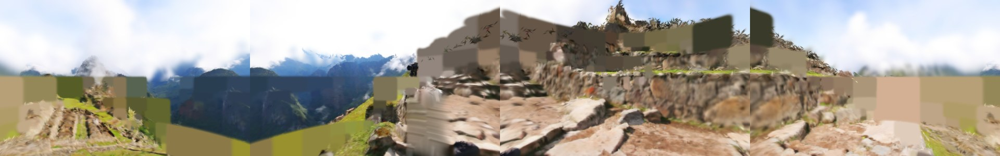

► Open in SuperSplatsuperspl.at/editor and streams
scene.sog (2.7 MB) from this page.| Gate | Stage | Verdict | Key metrics |
|---|---|---|---|
| watermark | s0_ingest | PASS | edge_density=0 |
| cleanplate_detector | s1_cleanplate | PASS | hits=0 |
| cleanplate_containment | s1_cleanplate | PASS | diff_px=85750, diff_px_outside_mask=0 |
| ground_plane | s2b_scale | PASS | cone_px=524288, h_rel=0.07028, inlier_px=513539 |
| min_content_distance | s2b_scale | FAIL | band_finite_px=267787, band_px=290816, near_distance_m=3.151 |
| hole | s7_gates | PASS | n_views=28, worst_alpha_below_skyline_frac=0.001725, worst_blob_px=47 |
| jitter | s7_gates | PASS | energy=0.0002034 |
| stereo | s7_gates | FAIL | min_depth_m=2.034, order_min_frac=0.963, vdisp_max_px=0.2521 |
| people | s7_gates | PASS | max_score=0.3213, n_detections=0 |
| budgets | s7_gates | PASS | compress_final_count=442746, compress_sog_bytes=2735454, count_vs_target_ratio=0.7379 |
fd01b9e1e82bd567…. Depth: Depth-Anything-V2-Small (Apache-2.0).
Detector: RT-DETR r18 (Apache-2.0). Source pano is owner-licensed and not included in
the repository.